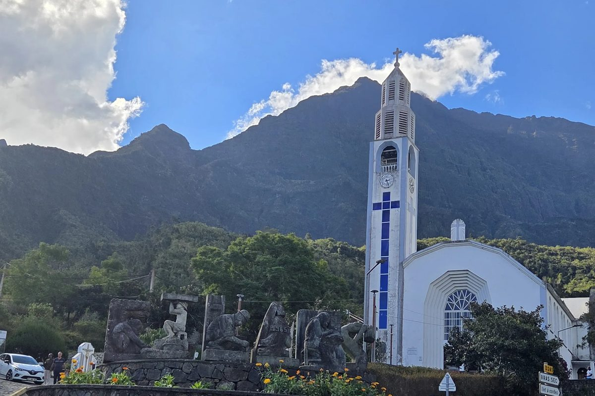
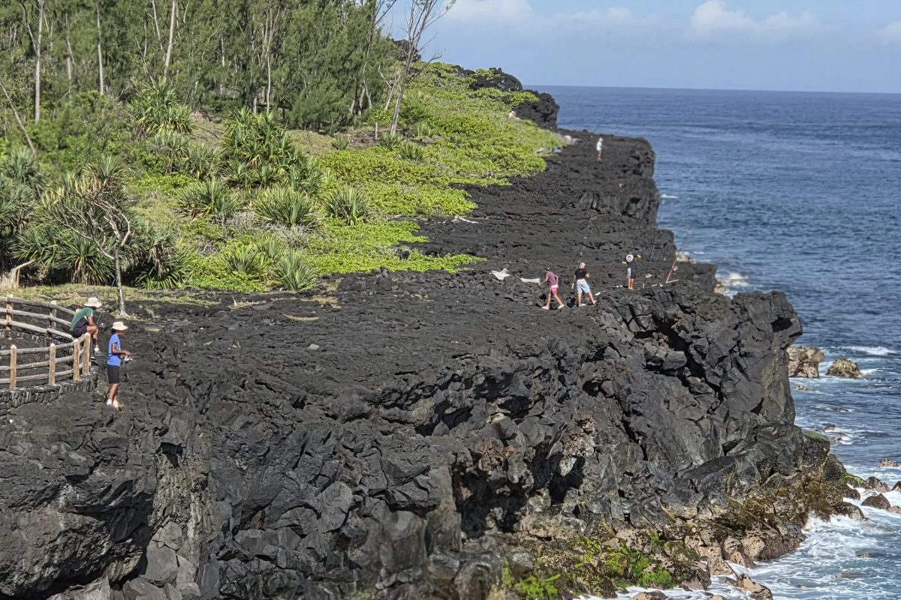

Le transport pour tous les publics, partout sur l'île.
Nos chauffeurs sont diplômés accompagnateurs TPMR (transport de personnes à mobilité réduite) : prise en charge à la porte, aide à l'installation, arrimage sécurisé des fauteuils, accompagnement pendant tout le trajet.
Tarif unique, quel que soit le véhicule. La manutention, l'installation sécurisée et l'accompagnement spécifique par un chauffeur diplômé TPMR sont compris dans chaque excursion. Journée d'environ 8 h, itinéraires réellement parcourus avant d'être proposés.

